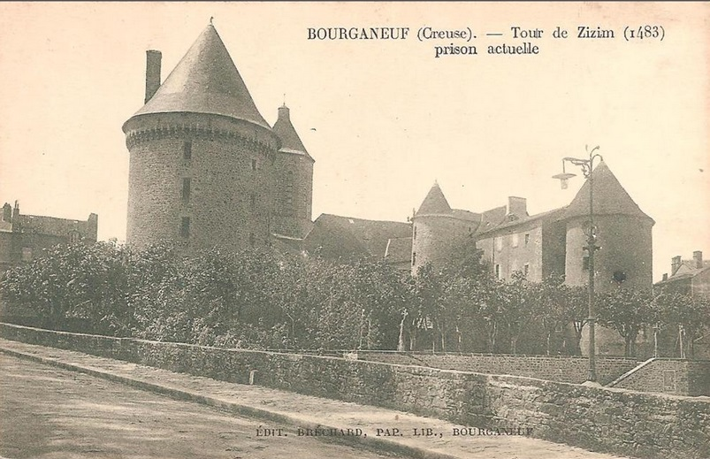
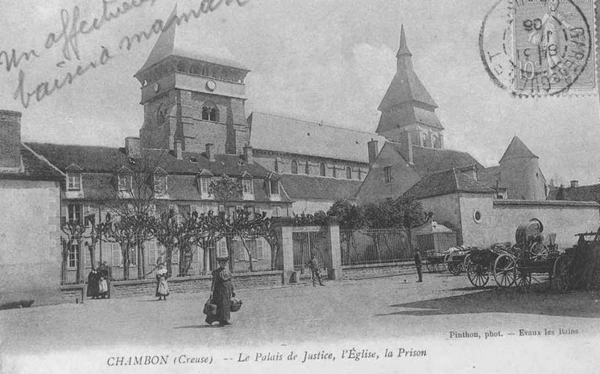
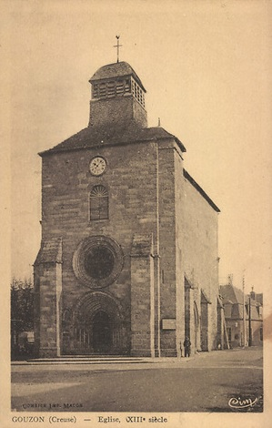
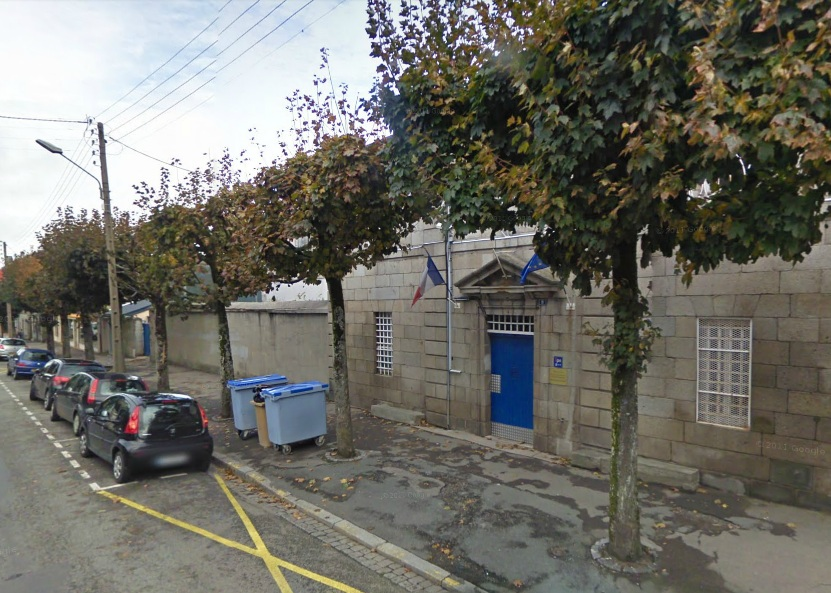

| Département | Images | Ville | Nom | Adresse | Période | Capacité | Histoire du lieu | Nombre d'exécutions |
| Creuse (23) | Aubusson | Maison d'arrêt | Actuelle rue Roger Cerclier | -1934 | Ancien couvent des Récollets. Démolie en même temps que l'ancien tribunal en 1969. | Aucune exécution | ||
| Creuse (23) |  |
Bourganeuf | Tour Zizim | Le Bourg | -1923 | Construite entre 1483 et 1486. Inscrite aux Monuments historiques. | Aucune exécution | |
| Creuse (23) |  |
Chambon-sur-Voueize | Maison d'arrêt | Rue de la Couture | -1926 | Bâtiment toujours existant, jouxtant le palais de justice. | Aucune exécution | |
| A VERIFIER !! Creuse (23) |
 |
Gouzon | Maison d'arrêt | 23, place de l'Eglise | -1926 | Construit dans l'église Saint-Martin. Devenu le restaurant "Le Sully". | Aucune exécution | |
| Creuse (23) |  |
Guéret | Maison d'arrêt, de justice et de correction | 9, avenue de la République | En service depuis 1835 | 40 places, 8 surveillants (1962) | Aucune exécution. |
{kind=link}
{kind=link}
{kind=link}
{kind=link}
{kind=link}